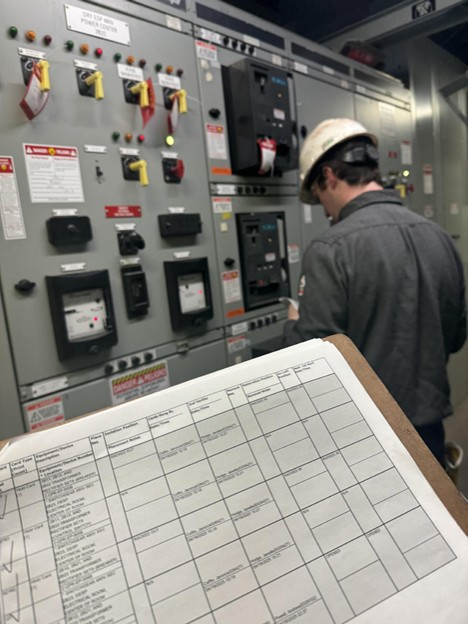
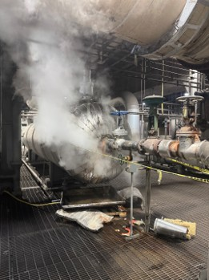
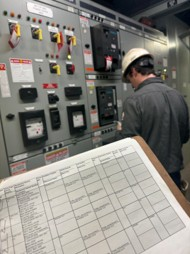
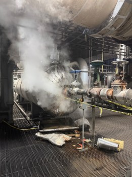
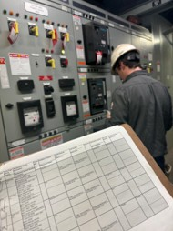

My Mentors Project
In addition to handling my own project I also assisted with my mentor's projects. He was replacing a waterwall, which is the side of a boiler that contains tubing needed to turn water into steam, and was fixing a reheat. Obviously I couldn't help design the project as it was already in progress but I could learn a ton from it. I was able to learn the commercial side of his projects. I was able to join in on lots of bid meeting where I learned how the project was presented, what types of questions were asked, and how the bid meeting was supposed to go. I also learned how to create clarifying questions. These are questions that are asked and we cannot answer them immediately. I also learned how bidding works, and how as engineerings we make decisions that affect peoples lives, buisnesses, safety, and so much more. I also learned about the art of bribing and how companies will sometimes bribe the engineer with gifts, money, etc so he or she will choose their bid. I learned that engineering ethics plays a huge role in how we handle ourselves and the decisions we make. I also learned about planning. At LGE there are a lot of projects that all happen at the same time, and our mechanical maintenece team, and our Instrument and Electrical team, had a lot of projects they had to work on. We had lots of meetings with other engineers about how to schedule each project so that all the work can be done. In addition sometimes multiple projects are happening in the same place, and we had to make sure that the workers were able to complete their tasks in a safe environment and not get injured from some other project. In addition communication with management was imperative and something we did regularly. In projects like these it's exteremely important to keep them in the loop and also format the emails properly. LGE taught me how to properly format an email and the correct language to use as well.

.jpg) 


